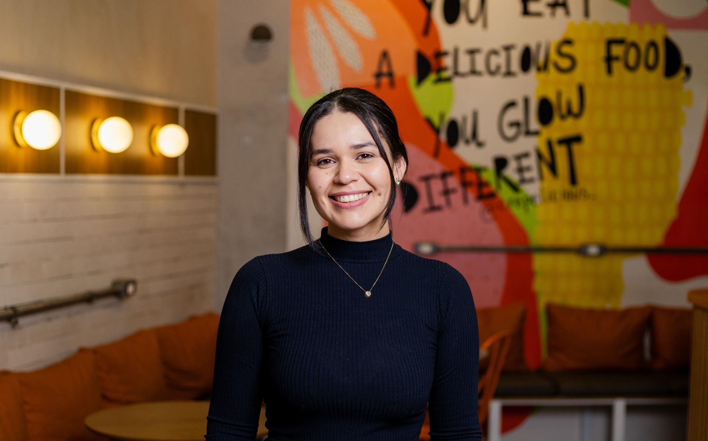

KAREN PEREIRA • EMPREENDEDORA
Ideias
com sabor
de futuro.
Construindo caminhos, encontros e uma história própria, todos os dias.

Crepelicious
De Gramacho,
Duque de Caxias
para novas possibilidades.
Não existe receita pronta para começar.
Sou Karen Pereira, empreendedora e proprietária da Crepelicious.
Administrar um restaurante é estar presente, tomar decisões e aprender todos os dias. É conhecer o próprio negócio, cuidar dos detalhes e encontrar espaço para novas ideias.
À frente da Crepelicious, sigo construindo essa trajetória com dedicação e abertura para evoluir. Este espaço é um convite para você conhecer um pouco do meu trabalho e se conectar comigo.
03 — O MEU LUGAR NO MUNDO
crepes · tapiocas · encontros
Crepe
licious!
Um restaurante onde sabores doces e salgados encontram diferentes momentos do dia.
Em Gramacho, a Crepelicious é onde o empreendedorismo ganha forma e a minha trajetória encontra a de tantas outras pessoas.
04 — TRAJETÓRIA EM DESTAQUE
Uma história que ganhou voz.
A trajetória da Crepelicious foi apresentada pelo Sebrae como um caso de inspiração, destacando desafios e avanços na gestão do negócio.
Ler a publicação do Sebrae05 — VAMOS NOS CONECTAR
Conversas boas
movem mundos.
Para acompanhar minha jornada, conhecer a Crepelicious ou conversar sobre parcerias, encontre-me por aqui.